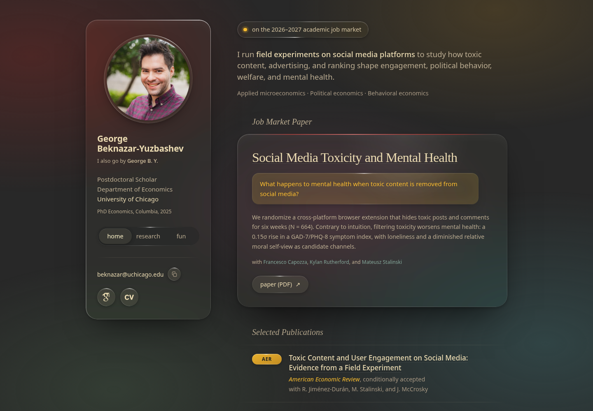
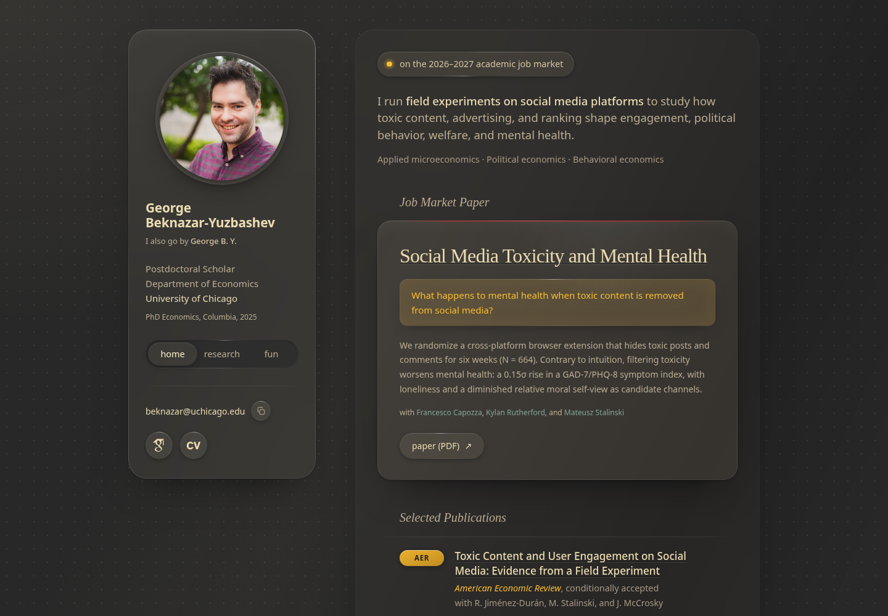
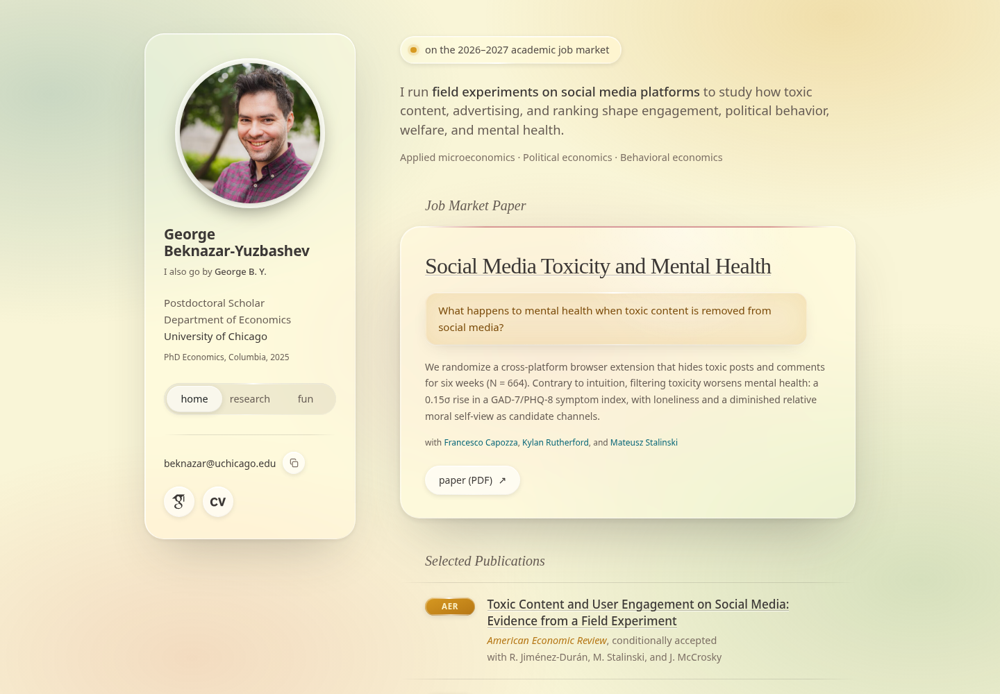
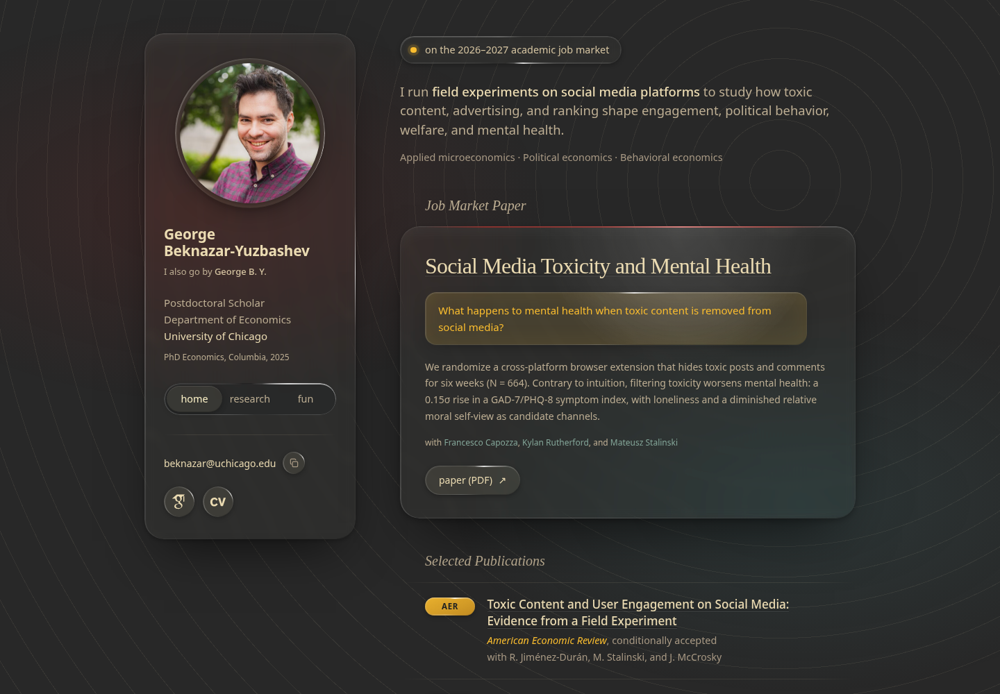
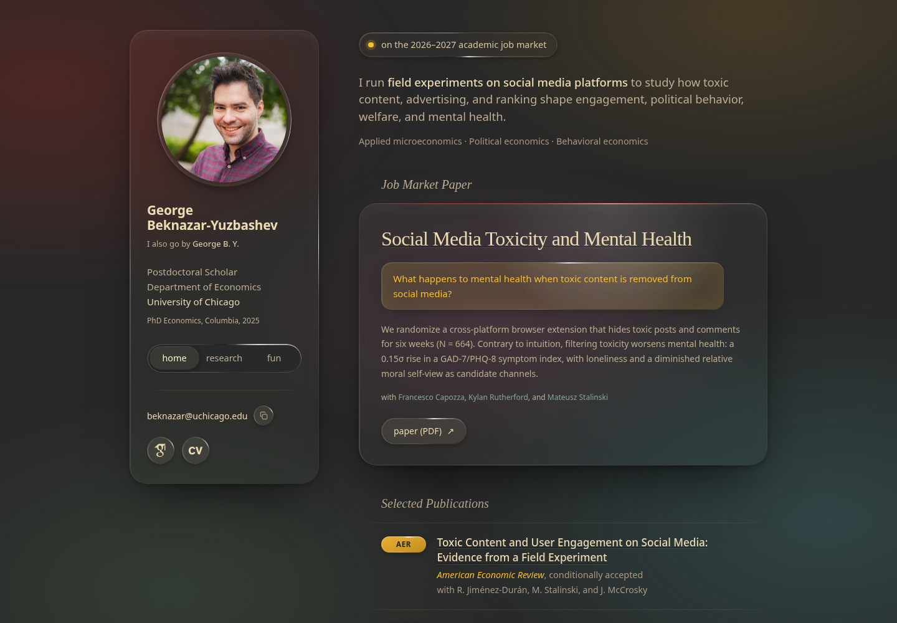

Four readings of the homepage in Apple’s Liquid Glass, all drawn from the Gruvbox palette. The sidebar and the job market card are sheets of glass that blur and tint what lies behind them, catch the light along a thin rim, and answer the pointer: the rim’s highlight leans toward it and a soft glint follows it across each sheet. The publications stay on the content layer beneath, as the material intends. Each keeps the live site’s markup, the compact sidebar, the live behaviours (copy key, click-to-enlarge photo, the word lift), and the two fixed signals: the question is the loudest object on every page, as tinted amber glass, and the AER and JPubE chips are coloured glass that stays bright.
Glass needs something behind it, and that is where the four differ most: what the wallpaper is, how frosted the glass is, whether the page is dark or light, and how much the pointer moves the light. Screenshots are 1440 wide with the pointer pinned over the card; open a study and move the pointer to see the light, hover the card and the keys, and narrow the window for the phone layout. Everything is CSS; no image files beyond the headshot.

01Clear
dark · colour pools · clear glass
The material as Apple draws it, on the site’s dark. Behind the page, pools of the palette’s accents, dim and far out of focus, drift a few percent over a minute: red up and to the left, ochre at the top right, slate blue low on the right, aqua low on the left. The sidebar and the card are clear glass, barely tinted, so the pools pass through them as washes of colour, with a light blur and a bright rim. The nav is one glass capsule with the current page as a lit lozenge; the portrait sits in a glass bezel; the status line is a glass pill.
Choose this for: the most recognisable reading of the style while staying dark and warm. The pools are the one knob to argue about: each is a line in glass-clear.css, so they can be fewer, dimmer, or still.

02Frost
dark · monochrome · frosted glass · stacked sheets
The quiet one, and the nearest to the Neumorphic theme’s taste. No colour behind the glass: the wallpaper is the page’s own grey under a lamp up and to the left, with a fine dot grid and two soft diagonal ridges for the frost to diffuse. The glass is the heavier material, Apple’s “regular” against the first study’s “clear”, and the page is built as stacked sheets with nesting corners: the main column is a faint frosted sheet, the job market card a brighter sheet upon it, and the question a well in the card. Rims are a single pixel and softer.
Choose this for: glass that is felt more than seen. It gives up the colour that makes the material obvious and keeps its layering, so it reads as a softer, more translucent Neumorphic rather than a new look.

03Daylight
light · pastel pools · clear glass
The canonical reading: clear glass over a light wallpaper, which is where the material is at its most recognisable. The only light study. The page is Gruvbox light’s hard cream with the Clear study’s pools drawn pastel. The glass is white-tinted and well saturated, with a bright white rim and a warm grey shadow; type is Gruvbox light’s charcoal, the accents its deep red and ochre. The question is warm tinted glass with deep ochre type, and the venue chips are solid ochre with cream type, so both signals hold on a light page.
Choose this for: the look people picture when they hear the name. It would be the site’s first light default, so the dark/light key the Neumorphic theme has would want porting; the dark studies could serve as its night side.

04Lens
dark · ripples · clearest glass · refraction · pointer light
The most dynamic reading. The glass is the clearest of the four, barely blurred, so what matters is how it bends and lights. In Chromium browsers the sidebar, the card and the status pill truly refract: a displacement map magnifies the wallpaper along their edges, as through a thick pane, so the sheets read as glass by what they do to what is behind them; other browsers keep a plain light blur. The wallpaper gives them something to bend: hairline ripples spreading from the top right, with two dim pools for warmth. The pointer is the light here: the rim highlight on every surface swings fully toward it, the glint is strongest, and the card and keys rise toward it.
Choose this for: the version that moves. It is the most “liquid” of the four and the most browser-dependent: the refraction is Chrome and Edge only today (Safari and Firefox see 01 Clear with ripples), and the pointer light does the most work, so it is the one to test on a laptop before deciding.

04bLens over pools
dark · colour pools · clearest glass · refraction · pointer light
Study 04 with study 01’s wallpaper: the Lens glass, refraction and pointer light, over the Clear study’s drifting pools in place of the ripple rings. Standing still it looks much like Clear, since both are clear glass over the same pools; the difference is in the hand. The glass is three times clearer, the rim highlight swings fully to the pointer rather than halfway, the glint is stronger, and the card and keys rise toward it. The refraction has less to bite on here, since a pool has no edges, so along the sheets’ edges it shows only as a slight thickening of the colour behind.
Choose this for: Lens without the rings. If the edge refraction is what you liked about 04, the pools give it little to do; the rings could come back far fainter, or wider spaced, as a middle path, and that is a one-line change in glass-lens-pools.css.